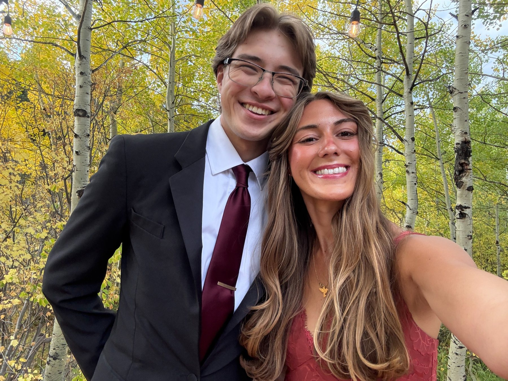
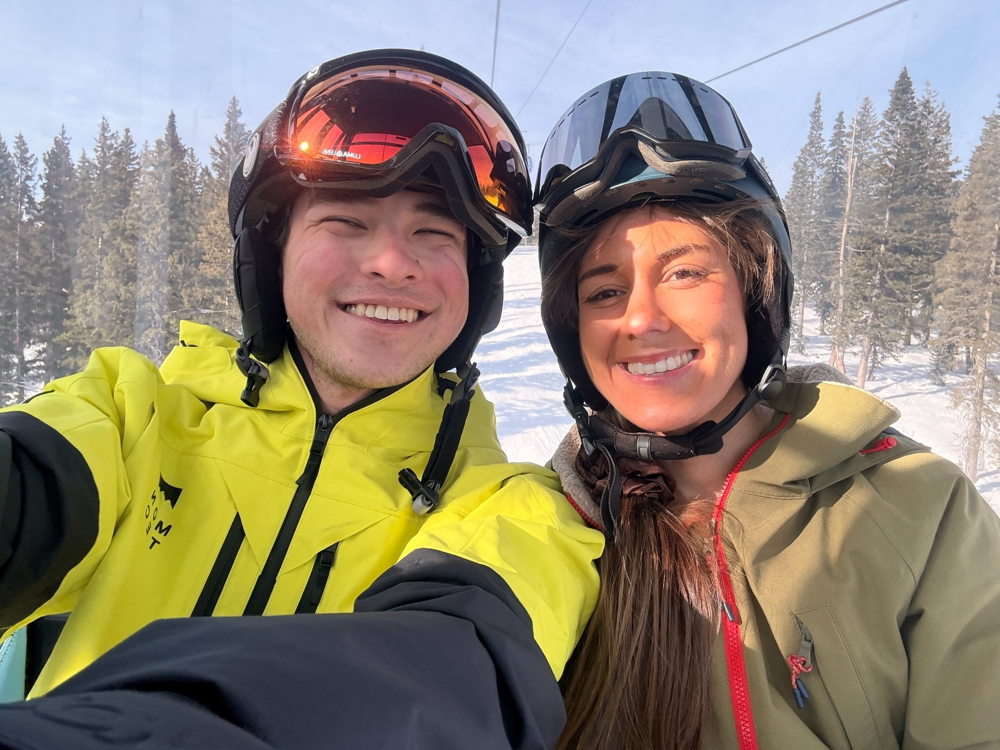
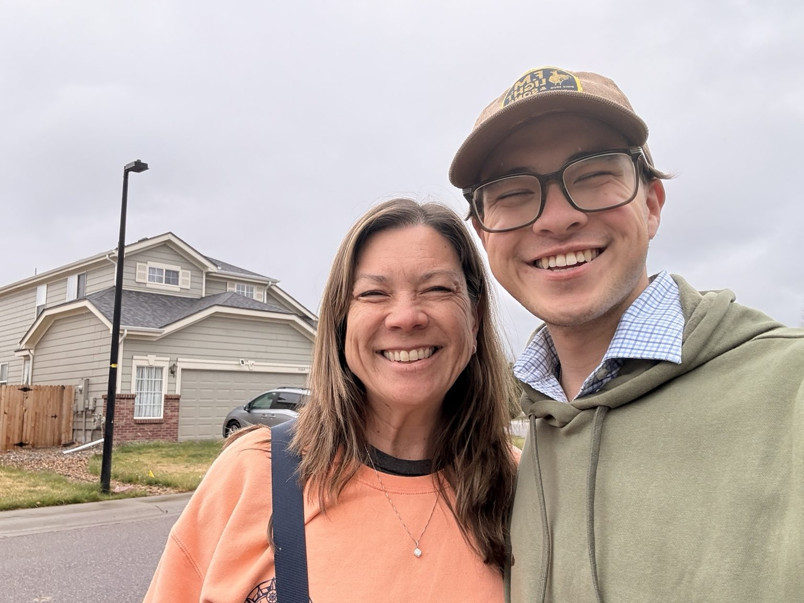

Response 6 - Assignment: Color
This page contains six standalone image slots (placeholders). Replace each placeholder with your original photographs (unique images only) that include at least one person. Present images in the order below, label them, and add a short reflection (100+ words).
1. Affinity of saturation

2. Contrast of saturation

3. Contrast of warm and cool colors

4. One-hue color scheme
5. Complementary hues color scheme

6. Three-way or four-way split color scheme

Reflection
Through this exercise, I learned that color affects both the mood of an image and the way a viewer's attention moves through it. Saturation can make a scene feel unified when the colors have a similar strength, but contrast in saturation can make one subject or area feel more important than the rest of the frame. Warm and cool colors also create visual energy because they push against each other and suggest different emotional temperatures. A one-hue color scheme feels more controlled and calm because the image depends on value, texture, and composition instead of many competing colors. Complementary and split color schemes feel more active because the hue relationships create tension. Overall, I learned that color is not only decorative; it changes visual intensity, creates meaning, and helps guide the viewer toward the most important parts of the photograph.